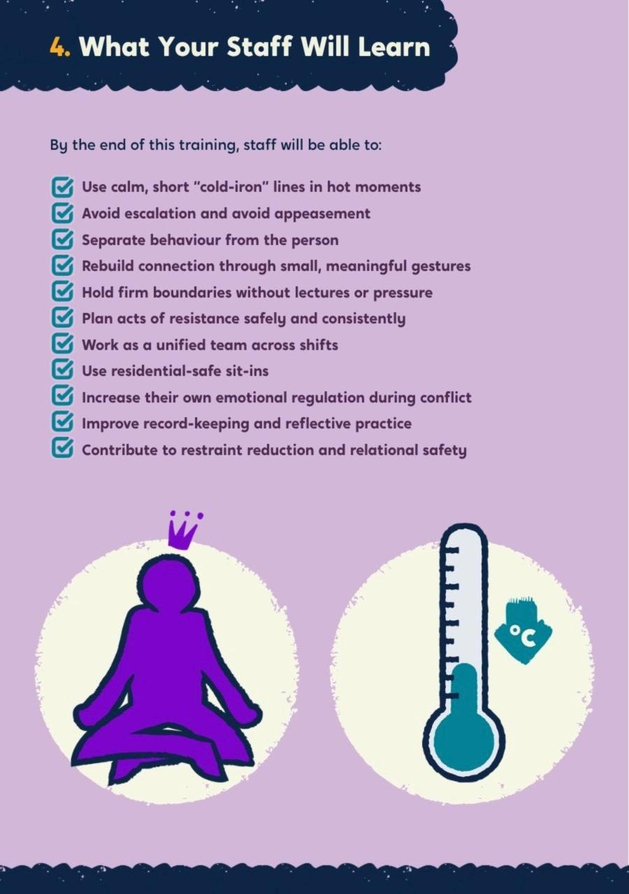
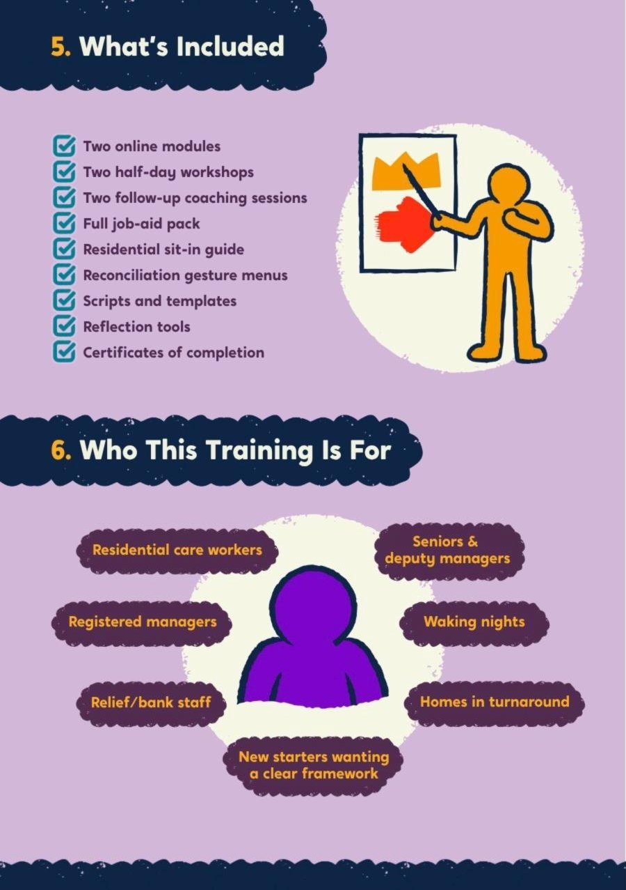

Durham County Council: non-violent resistance in 11 children’s homes
Durham Cares set a clear goal: less restraint and stronger relationships. Durham asked us to give every residential worker another way to respond when a young person’s behaviour escalates.


The starting point
Durham Cares committed the council to reducing physical restraint by 30% within two years. That meant giving staff something to do instead: a way to stay calm and present when a young person’s behaviour escalates, and to repair the relationship afterwards.
What we did
- Step 1OnlineTwo modules on The Care Leaders Online: NVR principles, the Seven Pillars and preparation for the workshops
- Step 2Workshop 1De-escalation and reconciliation gestures, run morning and afternoon so homes kept safe staffing
- Step 3Workshop 2Acts of resistance and sit-ins
- Reach120 staff, 11 homesFrom launch in September 2025 to the close of the programme
We designed the programme around the realities of residential care. Every member of staff completed two online modules on The Care Leaders Online, covering NVR principles, the Seven Pillars and preparation for the face-to-face sessions. They then attended two half-day workshops on de-escalation, reconciliation gestures, acts of resistance and sit-ins. We ran each workshop in the morning and again in the afternoon, so homes could keep safe staffing levels. The programme launched in September 2025, and by its close had reached 120 staff across 11 homes.
How we worked
Story
Every session started from staff’s own experience: the last time a young person used violence near them, and what it did to them.
Theory
Non-violent resistance and the research on using it in children’s homes, including where it gets hard.
Tools
De-escalation, reconciliation gestures and support from colleagues, taken back to the home that night.
What changed
70% less restraint in one home, and no placement breakdowns.
Durham reports a 70% reduction in the use of restraint in one children’s home, no placement breakdowns in any of its homes since using NVR, and fewer staff leaving. After the first workshop, understanding of NVR rose from 3.2 to 4.3 out of 5 across the 37 staff who gave feedback. When a respite home for disabled children asked how NVR would work for its young people, we wrote a workbook to answer it.
“Since using NVR we have had no placement breakdowns in any of our children’s homes.”
What Durham runs now
Every member of staff keeps access to the two online modules on The Care Leaders Online, and the approach now sits inside Durham Cares, the vision the council owns.
See the work
Open any piece to look through it page by page.
Seven pillars, one stance
Parental presence sits over all seven. Choose a pillar to see what it asks of staff.
The seven pillars of NVR
Stay calm and safe in the hot moment, and deal with it later. Strike when the iron is cold.
Choose the one or two behaviours that matter most now, and let the rest go for a while.
Small acts of care, offered whatever happens, that say the relationship matters.
Calm, planned action that stops adults being controlled by aggression.
No one does this alone. Colleagues and family act together and in the open.
A written commitment: we will not use violence, and we will resist it in our home.
Calm, persistent presence after an incident, adapted so it is safe in residential care.
Online, then in the room, then online again
- Online module 1 Why we are here, the ethos of NVR and the seven pillars
- Workshop 1 The evidence, parental presence, de-escalation, baskets and reconciliation gestures
- Online module 2 Quiz and review: how did your reconciliation gesture go?
- Workshop 2 Acts of resistance, supporters and self-care, announcements and sit-ins
Let’s start with ourselves
Think back to the last time a young person used violence near you.
- Feelings What did it bring up for you?
- Body What did you notice happening in your body?
- Actions What did you find yourself doing?
- After What happened next?
Two commitments before the first workshop
- My cold-iron line One sentence I will use to avoid arguing and come back to it later
- My reconciliation gesture A small act that says “our relationship matters”, offered whatever happens
Staff brought both to the room so we could practise them together.
What the evidence says about residential care
Staff using NVR described moving away from punishment-based practice towards something that felt more like a family home.
From MacKinnon et al. (2023), interviews with residential workers using NVR.
Two ways adults escalate
- Symmetrical Adult and young person each try to win. Voices rise, threats follow, the relationship takes the damage.
- Complementary The adult gives in to stop the aggression. The young person learns it works, and the adult’s presence shrinks.
Neither reduces violence. Parental presence is the way out of both.
Cold-iron lines
- “I’m not discussing this now. We’ll revisit at 19:00.”
- “I care about you too much to argue.”
- “I’m here. We’ll talk when everyone’s calm.”
- “You’re safe. I’m staying nearby.”
Strike when the iron is cold: deal with it later, at a time the adult chooses.
Three baskets
- Big basket Behaviours we choose not to respond to
- Middle basket Behaviours we are prepared to negotiate about
- Small basket The one or two behaviours we focus on now
Each home filled its baskets for a young person it was caring for.
Reconciliation gestures
- Connection A check-in note, a hot chocolate, a 10-minute walk
- Repair Help tidy a space, replace a small broken item
- Belonging An invite to a game, a choice of dinner
- Recognition A thank-you note for one small positive
Not bribery. The gesture happens whatever the behaviour, because the relationship matters.
The hot-moment protocol
- Safety first Move others to safety, call for support, follow the home’s policies
- De-escalate Calm tone, short lines, keep distance, no lectures
- Defer “This matters. We’ll talk at 19:00.”
- Record What happened, what kept it safe, what to try next time
- Plan Which basket? Which supporters? Which reconciling gesture?
Acts of resistance, at three levels
- Lower Small changes that stop adults being run by demands, such as moving away when an argument starts
- Medium School refusal, staying up gaming, coming home late: advance warning, supporters, follow-through
- Higher When a young person is at risk: calm, protective action, often with an announcement first
Everyone on shift is a supporter
- Witness Present during a sit-in or announcement
- Buffer Steps in to take the heat out of a situation
- Logistics Takes pressure off so others can act
- Mediator Helps agree repair or new rules
In a children’s home, colleagues support each other. Family can be part of it too.
An announcement
“We have decided that we can no longer have name-calling or aggressive language in our home. From now on, when you speak to us in that way, we will not engage. We will give you some space, and we can talk again when things are calmer.”
A worked example from the session. Staff wrote their own for a young person in their home.
Sit-ins, made safe for residential care
- Announce it “We’ll sit with you at 19:00 for 10 minutes because this matters.”
- Keep it open Communal area or open doorway. Never a closed door, never block an exit
- Two adults Where possible. If alone, a colleague knows and is on call
- Stop if it rises End calmly and reschedule
- Follow up A reconciling gesture within 24 hours, then log and debrief
Staff told us sit-ins worried them because of young people’s privacy, so we adapted the parent model.
Practise it
- Triads Worker, young person, observer, then rotate
- Round 1 Low concern: a plate left in the lounge
- Round 2 Medium concern: Wi-Fi off at 22:00
- Round 3 High concern: close supervision after an incident
Observers tick three things: short, succinct, scheduled.
NVR for non-verbal and autistic children
A respite home for disabled children asked how NVR would work for its young people. We wrote a workbook to answer that.
- Behaviour as communication Not manipulation: it may signal pain, anxiety or sensory overload
- Visual over verbal Gestures, pictures, communication boards and visual schedules
- Time to process Wait before repeating, and keep language short
A temperature check at handover
- Poker chips What has given you energy since you woke up, and what has taken it?
- Zones After any incident in the last 72 hours: are you on edge, flat or regulated?
- Plan by capacity Who has the capacity to lead what today, not just who is on the rota
Close: “Thank you for showing up honestly.”






What Durham reports
Durham also reports fewer staff leaving the service, with staff saying NVR makes a difference to their everyday practice.
In Durham’s words
“Since using NVR we have had no placement breakdowns in any of our children’s homes.”
Paul Rudd, Strategic Manager, Children’s Homes, Durham County Council
Why it saves money
- Placement stability Calmer responses and stronger relationships mean fewer breakdowns
- Workforce More confident staff, less burnout, fewer leavers
- Cost avoidance Less spent on breakdowns, restraint, turnover, sickness and agency cover
Durham describes the savings as cost avoidance, not service cuts.
After workshop 1
In their words
“Really took the time to listen to us and try to think about how we could use this in our home.”
“This training was far better than the previous training I have had for NVR.”
Anonymous feedback from residential staff.